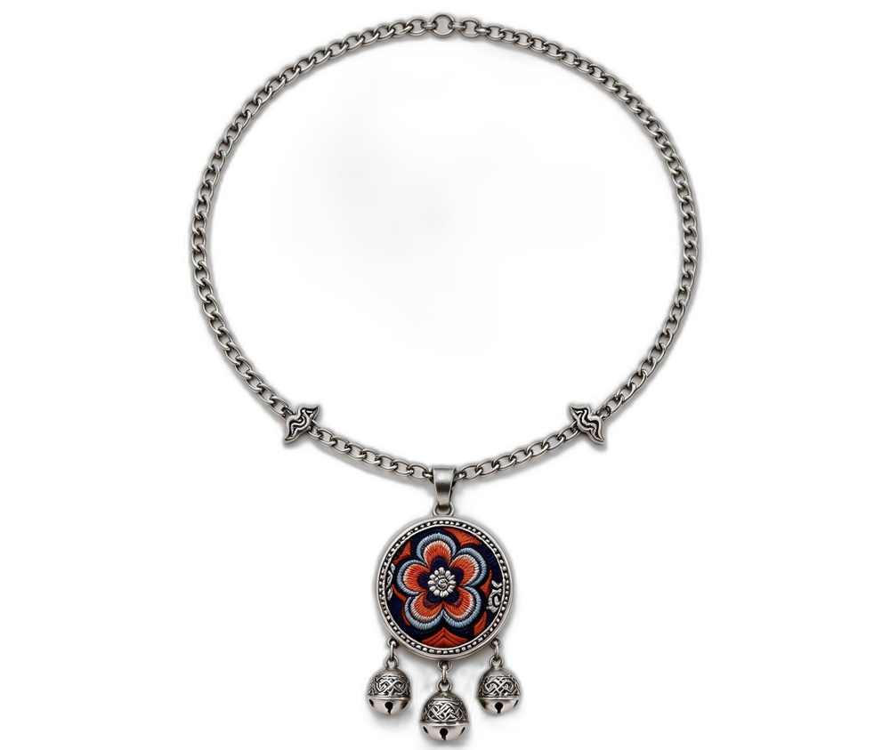
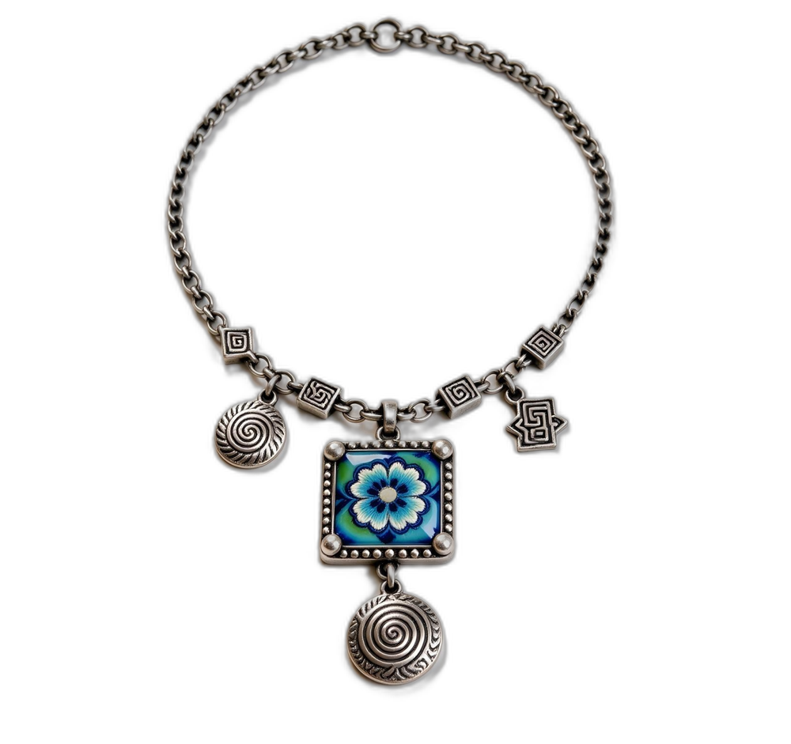

THE ART OF EVERYDAY ADORNMENT
Wear a little heritage.
CHAPTER 01 / INTO THE LIGHT
Into the light.
CHAPTER 02 / THE SPIRAL ECHO
An echo to wear.
细节，自有回响。 JIACAI / IN DETAILS

从彝绣花卉与几何纹样中拾取灵感，让山野的色彩，停留在耳畔、颈间与指尖。
